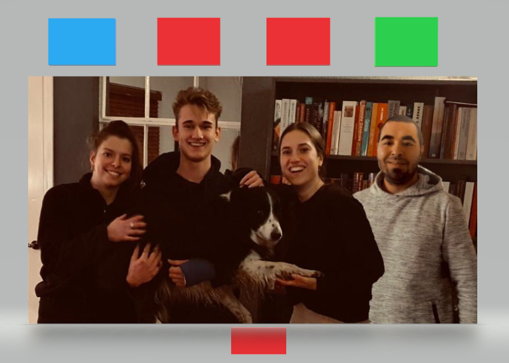
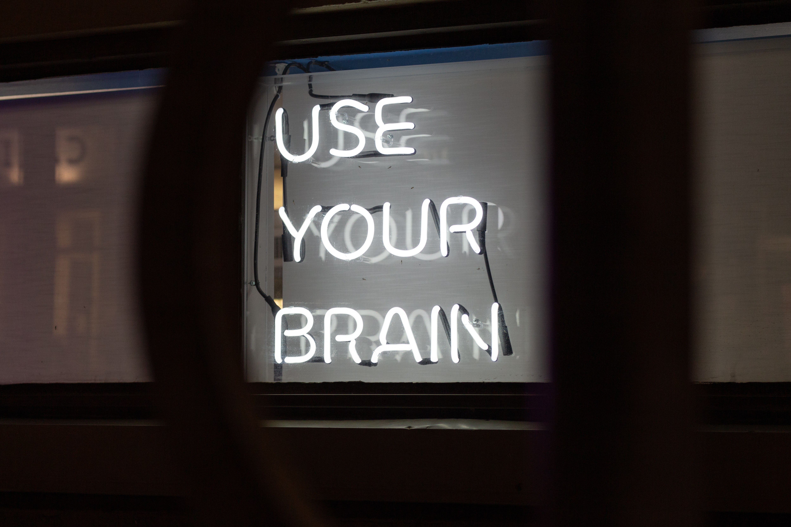

Het kleurenmodel van De Caluwé en Vermaak
Het kleurenmodel bestaat uit vijf verschillende kleuren: rood, groen, wit, geel en blauw. Elke kleur staat voor een andere manier van denken bij een verandering. Ik heb de kleurentest van TwynstraGudde gemaakt en hier kwam mijn visie op veranderen uit.
Klik hier voor mijn resultaat van de kleurentest.
Volgens de test scoor ik het hoogste op de rode veranderaar.
Rooddrukdenken In de rapportage van TwynstraGudde is te lezen dat voor de rode veranderaar motivatie belangrijk is. Het gedrag, de ambities en talenten van mensen in de organisatie zijn bepalend. Deze factoren kan je sturen door mensen te motiveren. Rooddrukdenkers zoeken een optimale fit tussen organisatie en mens om beiden te verbeteren. De rode veranderaar is zorgvuldig, gevoelig voor sfeer en houdt van mensen. Voor mij zijn goede communicatie en teambuilding belangrijk voor een goede samenwerking. Als een verandering niet aantrekkelijk is voor medewerkers, willen zij zich er niet toe bewegen.
Ik herken mezelf zeker in deze omschrijving. In mijn ogen ontstaat er veel weerstand en tegengeluid op veranderen als mensen in de organisatie niet gemotiveerd zijn om te veranderen. Het is belangrijk om medewerkers/stakeholders mee te nemen in een veranderproces.
Projectgroep De hele projectgroep heeft de test gemaakt. Binnen onze projectgroep zijn twee rode veranderaars, Sjoerd en ik. Dit kwam voor ons niet als verassing, omdat Sjoerd en ik sfeer in de groep erg belangrijk vinden en altijd tijd maken voor grapjes en kletsen. Rafke is een blauwe veranderaar. Dit is te merken aan dat ze graag dingen plant en voor zichzelf alles op een rijtje heeft wat er gedaan moet worden. Ze werkt heel precies en nauwkeurig. Jorg scoort het hoogst op groene veranderaar. Dit is terug te zien aan dat hij graag veel wil leren over nieuwe onderwerpen, hij stelt veel vragen over onderwerpen die hij nog niet goed kent. Wij vinden het een fijne combinatie van kleuren in onze projectgroep. Tijdens de meetings merken we dat Sjoerd en ik vaak wat chaotischer zijn dan de rest, wij raken sneller afgeleid omdat we weer een leuk verhaal willen vertellen.

Opdrachtgever Ik denk dat de organisatie TNO een blauwe veranderaar is. Typerend voor deze kleur is het zorgvuldig omschrijven of definiëren van de uitkomst of het resultaat. Dit doet TNO door alle ontwikkelingen te publiceren in wetenschappelijke artikelen. Dit is terug te zien aan XX. Onze opdrachtgever Jeroen is volgens ons een combinatie van blauw en rood. Dit denk ik omdat Jeroen vaak open staat voor small talk en moet lachen om grappige dingen die gebeuren tijdens de meetings. Hij werkt zorgvuldig en heeft tegen ons vertelt dat hij veel heeft geleerd van de manier waarop wij werken en powerpoints maken. Hij vindt het interessant om onze invalshoek over bepaalde onderwerpen te horen en vraagt ook regelmatig om feedback, zodat hij dit mee kan nemen voor zijn eigen werk.
Ilke Oner: master your mind & own your life.

Deze workshop werd gegeven door Ilke Oner in de Meshallen. Het was een interactieve workshop. Hier kwamen vier onderwerpen aan bod: universeel geluk en universele angst, het brein, het 5-G model en hoe haal je het beste uit jezelf en uit anderen.
Universeel geluk en universele angst
Ilke vertelde ons dat mensen wereldwijd dezelfde top 5 hebben van geluk en angst. Dit laat zien dat mensen van binnen allemaal hetzelfde zijn.
Top 5 universeel geluk:
- Gezondheid (fysiek en mentaal);
- Liefde en relaties (privé en studie/werk);
- Studie/werk/carrière;
- Productiviteit, resultaten en financiën;
- Bijdragen en voldoening.
Top 4 universele angst:
- Angst om dood te gaan;
- Afgescheiden zijn en verlating;
- Niet goed genoeg zijn;
- Verlies van controle.
Ondanks dat dit beiden universele lijsten zijn, vult iedereen deze pijlers op een andere manier in. Voor anderen is werk/studie belangrijker dan bijvoorbeeld liefde. Eén van de oorzaken van de verschillende invulling van de pijlers is de omgeving waarin je bent opgegroeid. Hierbij speelt cultuur een grote rol. Ook geloofsovertuigingen spelen een grote rol.
Ook moet je je hersenen trainen om niet bang te zijn of onzeker te zijn over bepaalde dingen. Ilke vertelde dat onze hersenen één functie hebben en dat is overleven. De rest is simpel gezegd bijzaak. Dit is me heel erg bijgebleven, omdat ik vaak last heb van angsten. Deze tip heb ik onthouden en toegepast op dingen in het dagelijks leven.
5G-model
Het 5G-model gaat over hoe je reageert op bepaalde dingen op basis van 5 zintuigen. Gevoelens, gedachten, gedrag, gevolg en gebeurtenis. Vaak is het eerste wat we willen veranderen ons gedrag. Maar voor je je gedrag kan veranderen, moet je je gedachten en gevoelens veranderen.
Conditionering houdt in dat wat je in anderen waardeert/waar je tegenop kijkt ook zelf hebt, of zelf graag zou willen. Dit heeft ze laten zien door middel van een oefening. We hadden een aantal minuten om van 5 mensen op te schrijven waarom ze je inspireren. Hetgeen wat je opschreef was iets wat je waarschijnlijk zelf had of graag zou willen. Ik had bijvoorbeeld mijn moeder en dat zij me inspireert omdat ze heel stevig in haar schoenen staat. Dit is een eigenschap die ik graag zou willen.
Effectieve communicatie
Stel dat je gesprekspartner weerstand geeft of het gesprek stroef loopt, dat betekent dat er een gebrek is aan rapport. Rapport is de basis van goede communicatie, dat is als je een 'klik'gevoel hebt met een ander. Rapport gebeurt automatisch bij mensen waarmee je een klik hebt. Je kunt het inzetten bij bijvoorbeeld sollicitatiegesprekken om een soepeler gesprek te hebben. Rapport communiceren gaat door afstemmen en spiegelen + volgen en leiden.
Deze methode heb ik ingezet tijdens het sollicitatiegesprek voor mijn stage. Hier lette ik op de houding, manier van praten en stemgebruik van de medewerker waarmee ik een gesprek had. Ook lette ik op zijn energie. Hij was rustig en maakte ondertussen wat grapjes. Ook had hij een ontspannen houding en vertelde hij dat het een informeel familiebedrijf was. Ik voelde me meteen op mijn gemak hierbij, maar heb erop gelet om ongeveer dezelfde houding aan te nemen als hij.